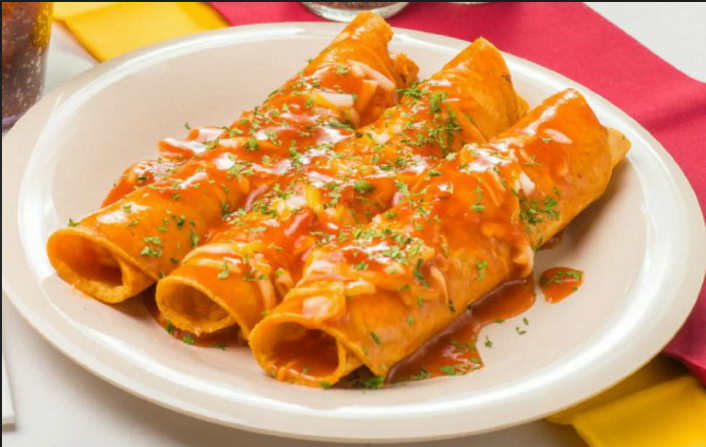
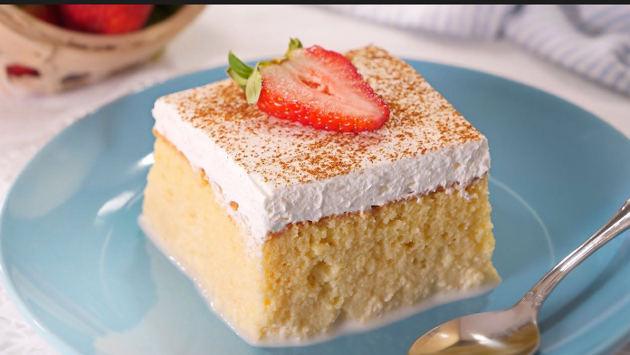
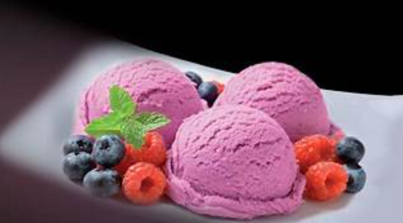

Platos principales
-
Tacos al pastor

Es un platillo preparado con carne de cerdo marinada en adobo de chiles y especias, asada en un trompo, servida en tortillas con piña, cilantro y cebolla.
Precio:160 pesos Tamaño:Mediano -
Enchiladas
Es un platillo hecho con tortillas rellenas de carne de pollo y queso, bañadas en salsa roja.
Precio:230 pesos Tamaño:Grande -
Chilaquiles
Es un platillo elaborado con trozos de tortilla de maíz fritos o tostados, bañados en salsa roja.
Precio:180 pesos Tamaño:Grande -
Mole poblano
Es una salsa mexicana hecha con chiles, especias, frutos secos, chocolate y otros ingredientes, servida sobre flautas de pollo.
Precio:230 pesos Tamaño:Mediano
Bebidas
-
Tequila
Destilado mexicano hecho a partir del agave azul, con denominación de origen.
Tamaño: Pequeño. Precio:110 pesos. -
Mezcal
Destilado artesanal mexicano, elaborado a partir de diferentes tipos de agave, con un sabor ahumado.
Tamaño: Pequeño. Precio: 120 pesos. -
Atole de guayaba
Es una bebida espesa y dulce típica de México, preparada con masa de maíz, leche y pulpa de guayaba.
Tamaño: Grande. Precio: 130 pesos. -
Pulque

Es una bebida tradicional mexicana, fermentada a partir del jugo del maguey, con un sabor ligeramente ácido y espeso.
Tamaño: Grande. Precio: 100 pesos.
Postres
-
Pastel 3 leches
Una rebanada de pastel de tres leches esponjosa y jugosa, empapada en leche evaporada, condensada y crema, cubierta con crema batida.
Tamaño: Pequeña. Precio: 75 pesos. -
Gelato
un helado italiano artesanal, más denso y cremoso que el helado tradicional.
Tamaño: Pequeño. Precio: 93 Pesos. -
Tiramisú
Es un postre italiano en capas, hecho con bizcochos empapados en café, crema de mascarpone endulzada y espolvoreado con cacao.
Tamaño: Pequeño. Precio: 67 pesos.